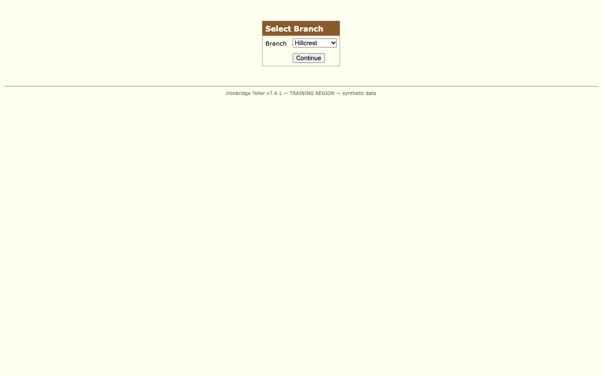

Run r_20261016T124546_92dec2: failed UNKNOWN_STATE sign-on did not reach its success state: an unrecognized screen is showing after 15000 ms
| step | strategy | rank | agreement |
|---|
| # | actor | event | detail |
|---|---|---|---|
| 1 | harness | surface.act | action=navigate; status=done |
| 4 | harness | surface.act | step_id=login.enter_username; action=fill; status=done |
| 6 | harness | surface.act | step_id=login.enter_password; action=fill; status=done |
| 8 | harness | surface.act | step_id=login.sign_on; action=click; status=done |
| 9 | system | run.failure | category=UNKNOWN_STATE; message=sign-on did not reach its success state: an unrecognized screen is showing after 15000 ms |
